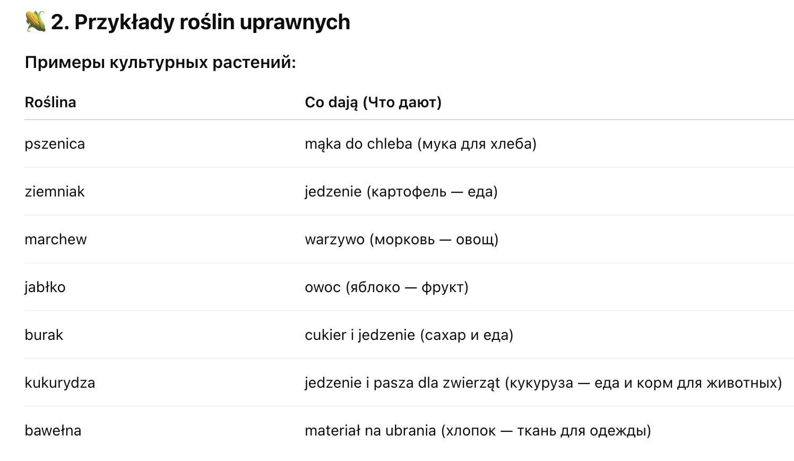

Przyroda > Swiat roślin > Rośliny uprawne
Swiat roślin
🌾 Rośliny uprawne
(Культурные растения)
🌱 1. Co to są rośliny uprawne?
Что такое культурные растения?
Rośliny uprawne – это растения, которые люди выращивают на полях и в огородах, чтобы получить еду, одежду или другие полезные вещи.

🌿 3. Dlaczego rośliny uprawne są ważne?
-
Почему культурные растения важны?
- Dostarczają nam jedzenie (дают нам еду)
- Pomagają w produkcji ubrania (помогают делать одежду)
- Używamy ich do produkcji leków i innych rzeczy (используются для лекарств и других вещей)
🌻 4. Jak rosną rośliny uprawne?
-
Как растут культурные растения?
- Ludzie siewają nasiona (сеют семена)
- Rośliny rosną na polu lub w ogrodzie
- Pielęgnujemy je: podlewamy, bronujemy, zbieramy plony